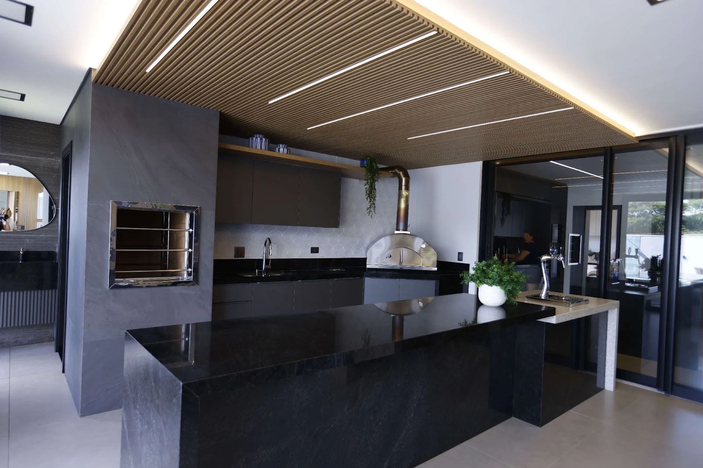
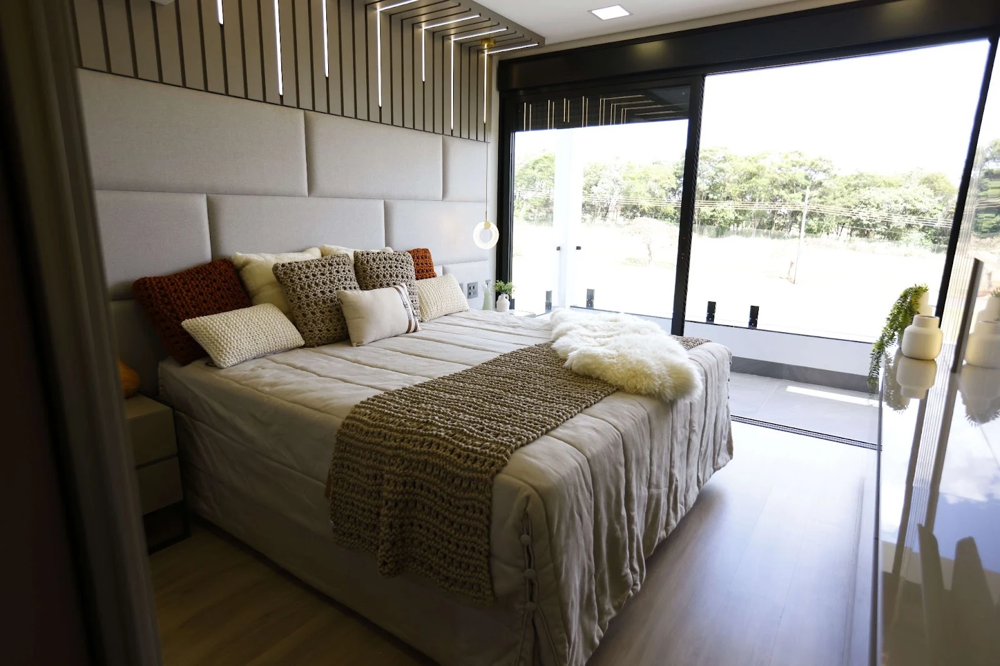
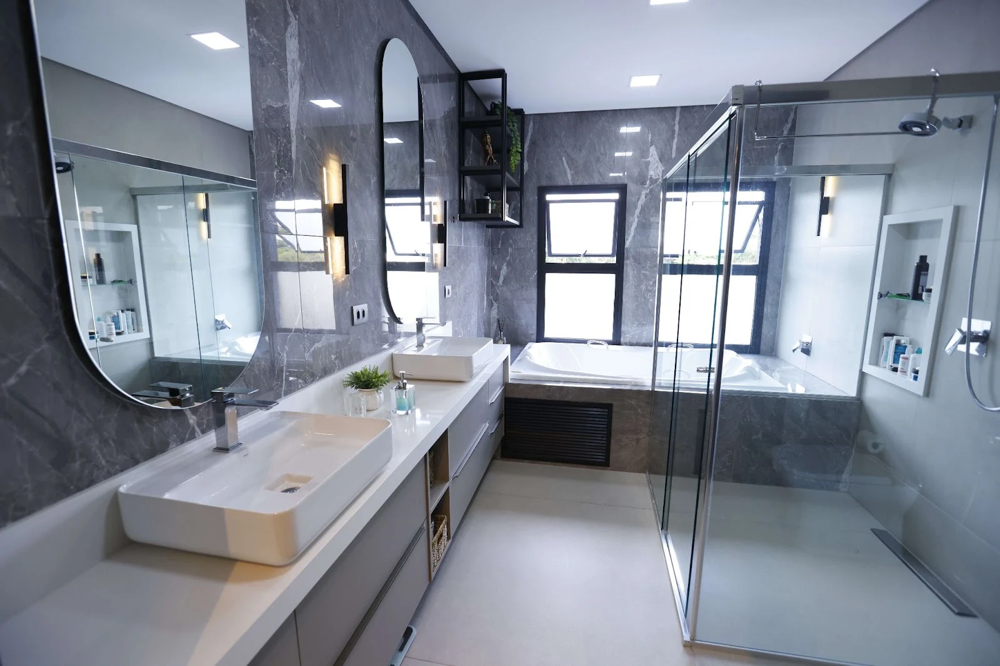
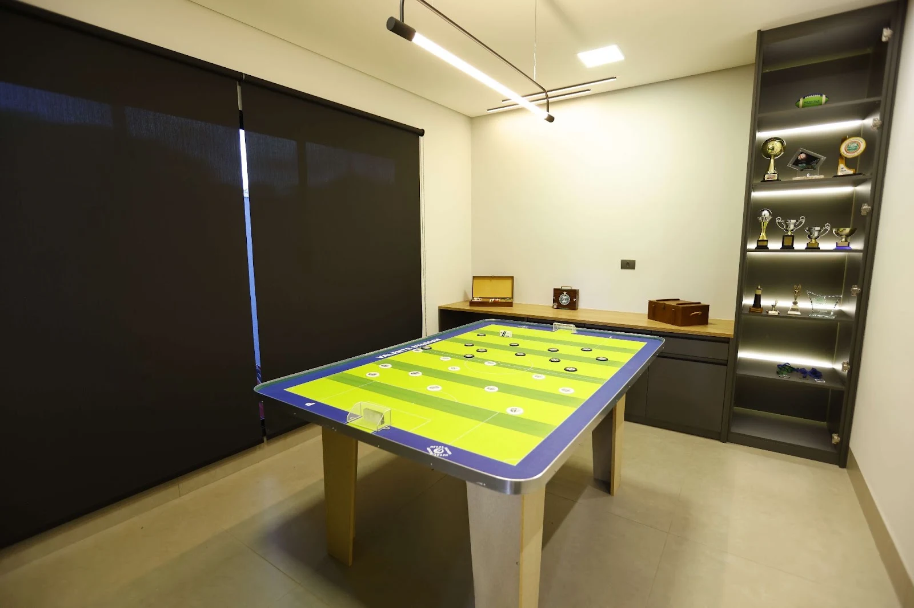
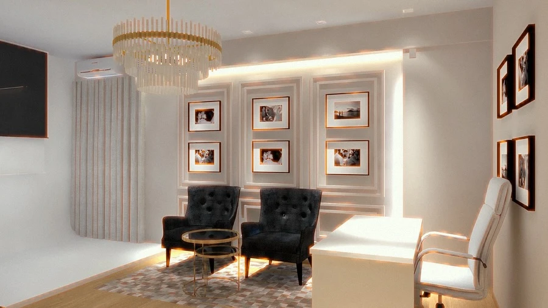
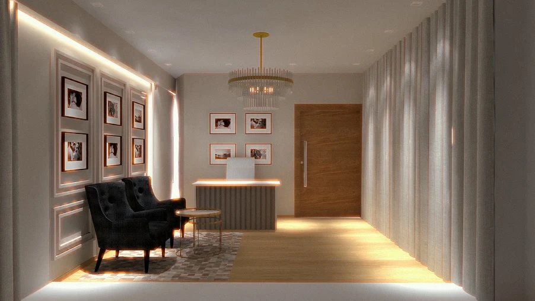
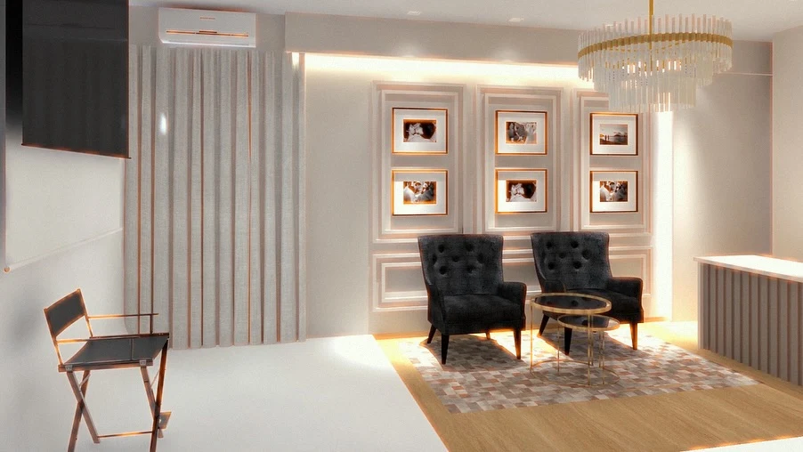
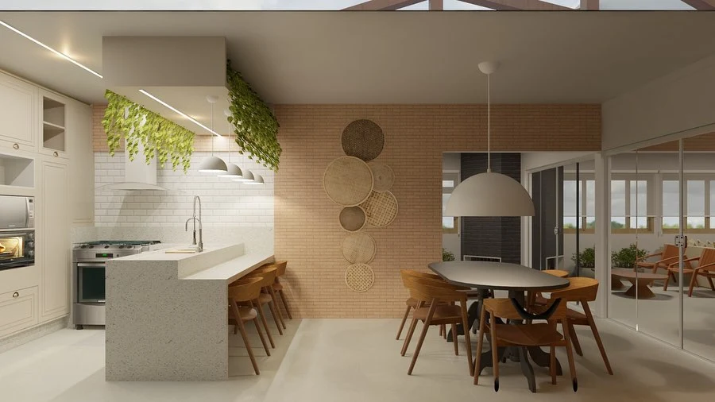
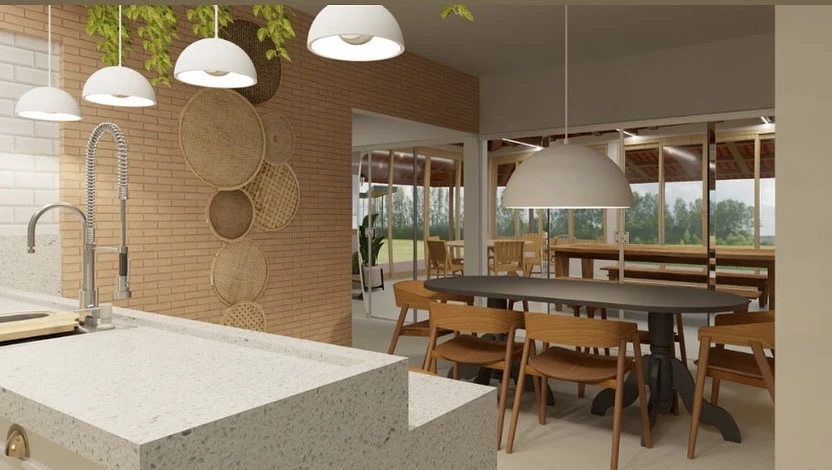
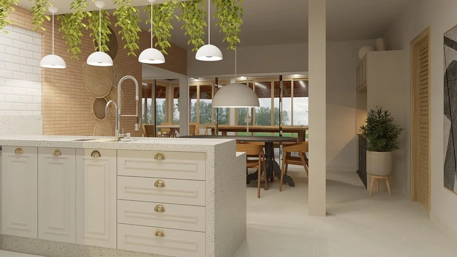

Imagem 01 · Fotografia
Casa Ville
Área gourmet com bancada escura e forro de madeira.
Rogeria Dominicalli, conforme crédito da matéria Club&Casa.
1600 × 1067 pixels na origem · Conferida em 18/11/2026Fotografia e visualização
Doze imagens, três projetos e um retrato. Fotografias de ambientes concluídos e visualizações em 3D estão identificadas separadamente. Os nomes “Estúdio em Santa Fé” e “Cozinha para área de lazer” são descrições editoriais dos ambientes.

Imagem 01 · Fotografia
Área gourmet com bancada escura e forro de madeira.
Rogeria Dominicalli, conforme crédito da matéria Club&Casa.
1600 × 1067 pixels na origem · Conferida em 18/11/2026
Imagem 02 · Fotografia
Vista superior dos ambientes sociais integrados.
Rogeria Dominicalli, conforme crédito da matéria Club&Casa.
2048 × 1366 pixels na origem · Conferida em 18/11/2026
Imagem 03 · Fotografia
Suíte com cabeceira estofada e abertura para o jardim.
Rogeria Dominicalli, conforme crédito da matéria Club&Casa.
1600 × 1067 pixels na origem · Conferida em 18/11/2026
Imagem 04 · Fotografia
Banheiro com bancada dupla e revestimento cinza.
Rogeria Dominicalli, conforme crédito da matéria Club&Casa.
1600 × 1067 pixels na origem · Conferida em 18/11/2026
Imagem 05 · Fotografia
Sala de lazer com mesa de jogos e iluminação indireta.
Rogeria Dominicalli, conforme crédito da matéria Club&Casa.
1600 × 1067 pixels na origem · Conferida em 18/11/2026Imagem 06 · Fotografia
Retrato profissional de Paula Martins.
Rogeria Dominicalli, conforme crédito da matéria Club&Casa.
1067 × 1600 pixels na origem · Conferida em 18/11/2026
Imagem 07 · Fotografia
Estúdio com poltronas escuras, molduras e iluminação acolhedora.
Rogeria Dominicalli, perfil marcado na publicação; confirmar crédito definitivo.
900 × 506 pixels na origem · Conferida em 18/11/2026
Imagem 08 · Fotografia
Luz natural atravessando o estúdio e suas cortinas claras.
Rogeria Dominicalli, perfil marcado na publicação; confirmar crédito definitivo.
902 × 508 pixels na origem · Conferida em 18/11/2026
Imagem 09 · Fotografia
Composição dos móveis e fotografias no estúdio.
Rogeria Dominicalli, perfil marcado na publicação; confirmar crédito definitivo.
902 × 508 pixels na origem · Conferida em 18/11/2026
Imagem 10 · Render
Visualização da cozinha integrada a uma área de lazer.
Paula Martins Arquitetura; autoria da visualização a confirmar.
900 × 506 pixels na origem · Conferida em 18/11/2026
Imagem 11 · Render
Visualização da bancada e da mesa na área de lazer.
Paula Martins Arquitetura; autoria da visualização a confirmar.
832 × 470 pixels na origem · Conferida em 18/11/2026
Imagem 12 · Render
Visualização da marcenaria clara e dos pendentes da cozinha.
Paula Martins Arquitetura; autoria da visualização a confirmar.
900 × 506 pixels na origem · Conferida em 18/11/2026As imagens foram obtidas pelas páginas públicas, sem login ou contorno de restrições. Mantêm seu conteúdo e cores; foram apenas convertidas para WebP e redimensionadas para carregamento. Nenhuma imagem de banco ou gerada por IA foi utilizada.
Fotos da Casa Ville e retrato: Rogeria Dominicalli, segundo a matéria da Club&Casa. No estúdio, o perfil da fotógrafa está marcado na publicação; confirmar o crédito definitivo. A autoria dos renders precisa ser confirmada com Paula.